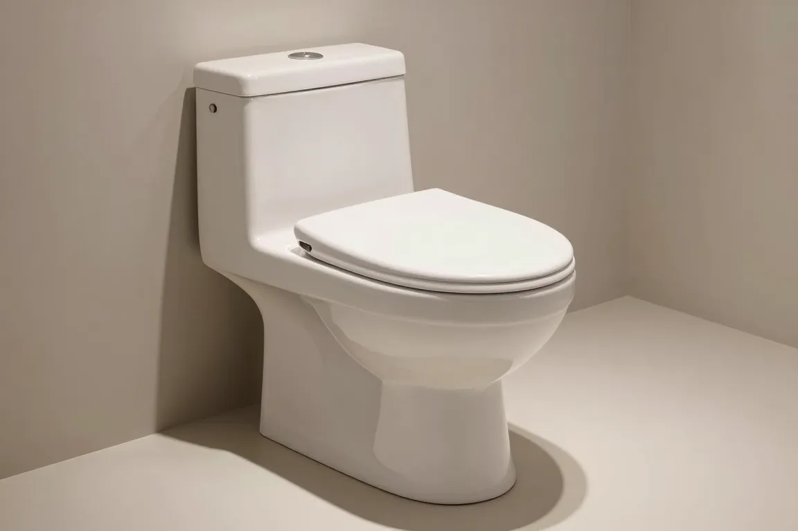

keramikk · 1980 to now · også: Elektronisk bidettoalett, Toalettsete med varmt vann, Japansk smarttoalett
Et WC av vitrøst porselen med oppvarmet sete, en dyse med varmt vann og et kontrollpanel. Keramikken er enkel og glatt, og teknologien sitter i setet og sisternen.

Kjerneidé
Et toalett er en ren maskin for kroppen, så keramikken forblir glatt og setet legger til vann, varme og kontroll.
Designprinsipper
Støp en glatt skål uten kantbryn, slik at smuss ikke kan bli under kanten.
Glasér skålen med en hard, tett glasur med en overflateruhet under 0,1 mikrometer.
Monter et sete som varmes til omtrent 36 °C, med et lokk som lukker seg sakte.
Skjul dysen bak et deksel og vask den med vann før og etter hver bruk.
Plasser kontrollpanelet på siden eller på en veggfjernkontroll, med 4 til 8 enkle ikoner.
Bruk en tornadoskylling på 4 til 5 liter, slik at skålen rengjøres med lite vann.
Hold formen kompakt, 650 til 700 mm lang, med ett legeme og én farge.